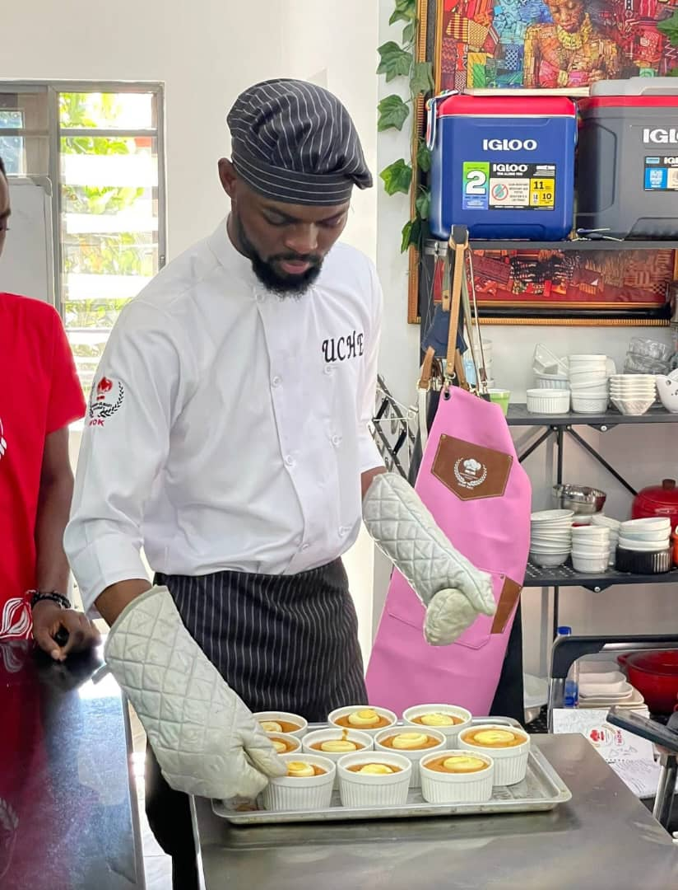

Culinary Leadership & Kitchen Operations
Over several years I have worked as Head Chef and Executive Chef. Responsibilities included overseeing daily kitchen operations, coordinating teams, developing menus, managing food production, and maintaining professional standards. The work required clear communication, consistency under pressure, and attention to both quality and cost.
Discuss this work →